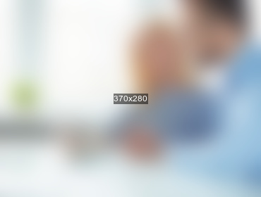

Peer-to-peer fundraising, or getting your supporters to fundraise on your behalf, therefore expanding...
Since FundPress joined Funding in January, we’ve been evolving into something bigger and better.

When thinking about your corporate foundation’s giving strategy, you may conjure up images of stacks of grant...
Recently we let loose on how we think about social fundraising, and why we think the conversation might need.
You’re probably familiar with giving day campaigns, voting campaigns, and other tactics for raising lots of money...
We know that if you work for a charity or nonprofit organization, you’ve got your work cut out for you.
If you’ve created a fundraiser, you know that updates are really important. Keeping donors up to speed...
I’d only been working at CrowdRise for a week the first time it happened. I didn’t even realize it...
With just a few weeks left to make tax-deductible donations, using the campaign update tool to easily and...